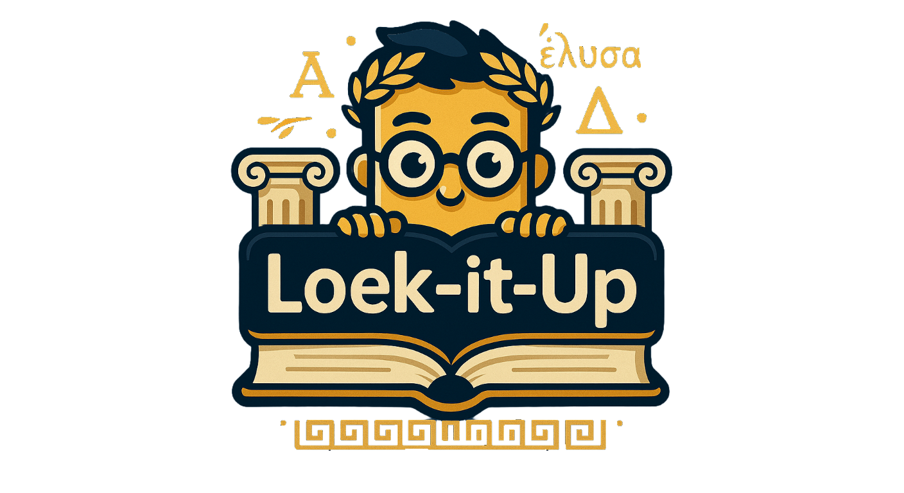

Kies je thema
✕
☀️
Licht
🌙
Donker
🔥
Hel
:root { --primary-color: #FFD700; /* Goud */ --secondary-color: #FFA500; /* Oranje */ --text-color: #2d3436; --background-gradient: linear-gradient(135deg, #f5f7fa 0%, #c3cfe2 100%); --card-shadow: 0 10px 30px rgba(0, 0, 0, 0.1); --transition-speed: 0.3s; } body { font-family: 'Poppins', sans-serif; margin: 0; padding: 20px; background: var(--background-gradient); min-height: 100vh; display: flex; flex-direction: column; align-items: center; color: var(--text-color); } .container { width: 90%; max-width: 700px; /* Iets breder voor de opties */ text-align: center; } .site-logo { width: 200px; /* Vergroot logo */ height: auto; margin-bottom: 15px; } h1 { font-size: 2.8em; /* Iets kleiner dan LoekItUp */ font-weight: 700; margin-bottom: 30px; background: linear-gradient(135deg, var(--primary-color) 0%, var(--secondary-color) 100%); -webkit-background-clip: text; -webkit-text-fill-color: transparent; text-shadow: 2px 2px 4px rgba(0, 0, 0, 0.1); } #startScherm h2 { font-size: 1.8em; color: var(--text-color); margin-bottom: 20px; } .vraag { font-size: 2em; /* Groter voor Griekse tekst */ margin-bottom: 25px; font-weight: bold; min-height: 2em; background-color: rgba(255, 255, 255, 0.9); padding: 20px; border-radius: 15px; box-shadow: var(--card-shadow); color: #333; /* Donkerder voor leesbaarheid Grieks */ line-height: 1.4; } #antwoordContainer { margin-top: 20px; margin-bottom: 25px; display: none; background-color: rgba(232, 244, 232, 0.9); /* Lichter groen met transparantie */ padding: 15px; border-radius: 10px; text-align: left; box-shadow: 0 5px 15px rgba(0, 0, 0, 0.05); } #antwoordContainer p { margin: 10px 0; font-size: 1.1em; } #antwoordContainer strong { color: #2e7d32; /* Donkerder groen */ } button { background: linear-gradient(135deg, var(--primary-color) 0%, var(--secondary-color) 100%); color: white; font-weight: 600; padding: 12px 24px; border-radius: 10px; border: none; box-shadow: 0 4px 15px rgba(255, 215, 0, 0.2); transition: all var(--transition-speed) ease; font-size: 1rem; cursor: pointer; margin: 8px 4px; /* Iets meer verticale marge */ } button:hover { transform: translateY(-2px); box-shadow: 0 6px 20px rgba(255, 215, 0, 0.3); } button:disabled { background: linear-gradient(135deg, #b0bec5, #90a4ae); /* Grijs gradient */ box-shadow: inset 0 2px 4px rgba(0,0,0,0.1); /* Lichte inset schaduw */ cursor: not-allowed; transform: none; color: #607d8b; /* Donkerder grijs tekst */ } #startScherm button { display: block; width: 200px; margin: 15px auto; padding: 15px; font-size: 1.1em; } #feedbackContainer { margin: 20px 0; /* Iets meer ruimte rondom */ font-weight: bold; min-height: 1.2em; font-size: 1.1em; opacity: 0; /* Start onzichtbaar voor animatie */ transition: opacity 0.4s ease-in-out; /* Fade-in animatie */ } #feedbackContainer.zichtbaar { opacity: 1; /* Maak zichtbaar */ } .correct { color: #1b5e20; } /* Donkergroen */ .fout { color: #c62828; } /* Donkerrood */ #resultatenContainer { margin-top: 40px; font-size: 1.2em; background-color: rgba(255, 255, 255, 0.95); padding: 25px; border-radius: 15px; box-shadow: var(--card-shadow); } #resultatenContainer button { margin-top: 15px; } #quizContainer, #resultatenContainer { /* Display wordt nu beheerd door JS */ /* display: none; Initieel verborgen */ } /* Styling voor voortgangsbalk (toegevoegd) */ #progress-container { width: 100%; margin-bottom: 20px; display: none; /* Start verborgen */ } .progress-bar-background { background-color: #e0e0e0; /* Lichte achtergrond */ border-radius: 10px; height: 12px; overflow: hidden; box-shadow: inset 0 1px 3px rgba(0,0,0,0.1); } #progress-bar { height: 100%; width: 0%; /* Start op 0 */ background: linear-gradient(135deg, var(--primary-color) 0%, var(--secondary-color) 100%); border-radius: 10px; transition: width 0.4s ease; } #progress-text { text-align: center; margin-bottom: 5px; font-size: 0.9em; color: var(--text-color); } /* Styling voor vraag-slider */ #vragenSliderContainer { margin: 20px auto; max-width: 300px; } #vragenSliderContainer label { display: block; margin-bottom: 8px; font-weight: 500; } #vragenSlider { -webkit-appearance: none; /* Override default look */ appearance: none; width: 100%; /* Full width */ height: 10px; /* Thinner track */ background: #ddd; /* Light grey background */ outline: none; opacity: 0.9; transition: opacity .2s; border-radius: 5px; } #vragenSlider:hover { opacity: 1; /* Fully visible on hover */ } /* Styling Thumb (Chrome, Edge, Safari) */ #vragenSlider::-webkit-slider-thumb { -webkit-appearance: none; appearance: none; width: 22px; /* Size of the thumb */ height: 22px; background: var(--secondary-color); /* Orange color */ cursor: pointer; border-radius: 50%; /* Circle */ border: 2px solid white; /* White border */ box-shadow: 0 2px 4px rgba(0,0,0,0.2); margin-top: -6px; /* Trek de thumb iets omhoog om te centreren */ } /* Styling Thumb (Firefox) */ #vragenSlider::-moz-range-thumb { width: 20px; /* Size of the thumb */ height: 20px; background: var(--secondary-color); /* Orange color */ cursor: pointer; border-radius: 50%; /* Circle */ border: 2px solid white; /* White border */ box-shadow: 0 2px 4px rgba(0,0,0,0.2); } /* Styling Track (Chrome, Edge, Safari) - make it match thumb better */ #vragenSlider::-webkit-slider-runnable-track { height: 10px; cursor: pointer; background: linear-gradient(to right, var(--primary-color), var(--secondary-color)); /* Gradient track */ border-radius: 5px; } /* Styling Track (Firefox) - make it match thumb better */ #vragenSlider::-moz-range-track { height: 10px; cursor: pointer; background: linear-gradient(to right, var(--primary-color), var(--secondary-color)); /* Gradient track */ border-radius: 5px; } #toetsInputContainer { margin-bottom: 25px; background: rgba(255, 255, 255, 0.9); padding: 20px; border-radius: 10px; box-shadow: 0 5px 15px rgba(0, 0, 0, 0.05); } #toetsInputContainer label, #toetsInputContainer div { display: block; margin-bottom: 12px; font-weight: 500; text-align: left; } #toetsInputContainer input[type="text"] { padding: 12px; font-size: 1em; border: 1px solid #ccc; border-radius: 8px; width: calc(100% - 26px); /* Rekening houdend met padding */ margin-bottom: 15px; transition: border-color 0.3s; } #toetsInputContainer input[type="text"]:focus { outline: none; border-color: var(--secondary-color); /* Oranje focus */ box-shadow: 0 0 5px rgba(255, 165, 0, 0.3); /* Lichte oranje gloed */ } #aoristusTypeSelectie { text-align: left; margin-bottom: 15px; } #aoristusTypeSelectie label { display: block; /* Onder elkaar */ margin-bottom: 8px; cursor: pointer; font-weight: normal; padding: 5px 0; /* Meer verticale ruimte voor tikken */ } #aoristusTypeSelectie label:hover { background-color: rgba(255, 215, 0, 0.1); /* Lichte highlight bij hover */ } #aoristusTypeSelectie input[type="radio"] { margin-right: 8px; cursor: pointer; } #toetsInputContainer button { width: 100%; padding: 14px; font-size: 1.1em; } /* Responsive aanpassingen */ @media (max-width: 600px) { body { padding: 15px 10px; /* Meer verticale padding */ } .container { width: 95%; } .site-logo { width: 120px; /* Iets kleiner logo op mobiel */ } h1 { font-size: 2.0em; /* Nog iets kleiner */ margin-bottom: 20px; } .vraag { font-size: 1.6em; padding: 15px; margin-bottom: 20px; } button { padding: 10px 18px; font-size: 0.95rem; } #startScherm button { width: 180px; padding: 12px; font-size: 1em; } #toetsInputContainer input[type="text"] { font-size: 0.95em; padding: 10px; } #toetsInputContainer button { padding: 12px; font-size: 1em; } #antwoordContainer p { font-size: 1em; } #aoristusTypeSelectie label { padding: 5px 0; /* Meer verticale ruimte voor tikken */ } #feedbackContainer { font-size: 1em; } #resultatenContainer { font-size: 1.1em; padding: 20px; } }

Oefen je Griekse Aoristus
Kies een modus:
Kies aantal vragen:
In gedachten
Toets
Jouw vertaling:
Kies het type werkwoord:
Pseudo-Sigmatisch
Thematisch
Imperfectum
Bepaal persoon en getal:
Persoon:
Kies...
1e
2e
3e
Getal:
Kies...
Enkelvoud (ev.)
Meervoud (mv.)
Controleer Antwoord
Toon Antwoord
Correct antwoord:
Vertaling:
Grammatica:
Type:
Volgende Vraag